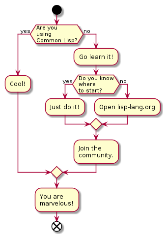

40ants-doc-plantuml - An extension to 40ants-doc Common Lisp documentation library to render PlantUML diagrams inside of the documentation.
40ANTS-DOC-PLANTUML ASDF System Details
Description: An extension to 40ants-doc Common Lisp documentation library to render Plant
UMLdiagrams inside of the documentation.Licence: Unlicense
Author: Alexander Artemenko <svetlyak.40wt@gmail.com>
Homepage: https://40ants.com/doc-plantuml
Bug tracker: https://github.com/40ants/doc-plantuml/issues
Source control: GIT
Depends on: 40ants-doc, 40ants-doc-full, 40ants-plantuml, common-doc, serapeum, str


Installation
You can install this library from Quicklisp, but you want to receive updates quickly, then install it from Ultralisp.org:
(ql-dist:install-dist "http://dist.ultralisp.org/"
:prompt nil)
(ql:quickload :40ants-doc-plantuml)Usage
Use defdiagram macro to define a diagram:
(defdiagram @demo ()
"
@startuml
start
if (Are you\nusing\nCommon Lisp?) then (yes)
label space1
label space2
:Cool!;
else (no)
:Go learn it!;
if (Do you know\nwhere\nto start?) then (yes)
:Just do it!;
else (no)
:Open lisp-lang.org;
endif
:Join the\ncommunity.;
endif
:You are\nmarvelous!;
end
@enduml
")Then you can include this diagram into a documentation section:
(defsection @example (:title "Example")
"Here is our diagram:"
(@demo diagram))and image will be rendered like this:

API
40ANTS-DOC-PLANTUML
Macros
This macro creates a diagram object and binds it to a variable with given NAME.
Forms given in the body, should return a string in the format of PlantUML diagram.
This could be a simple string or one or more lisp forms.